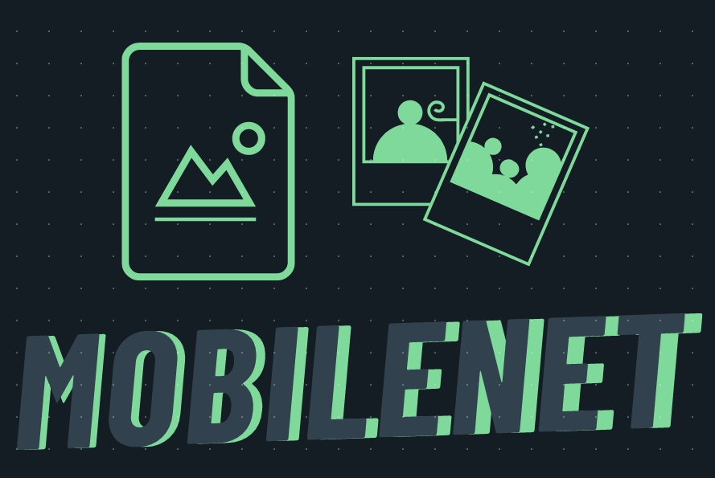
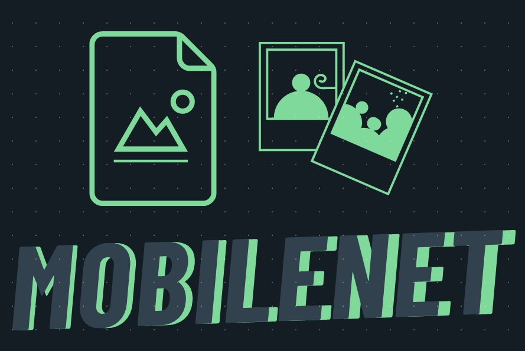
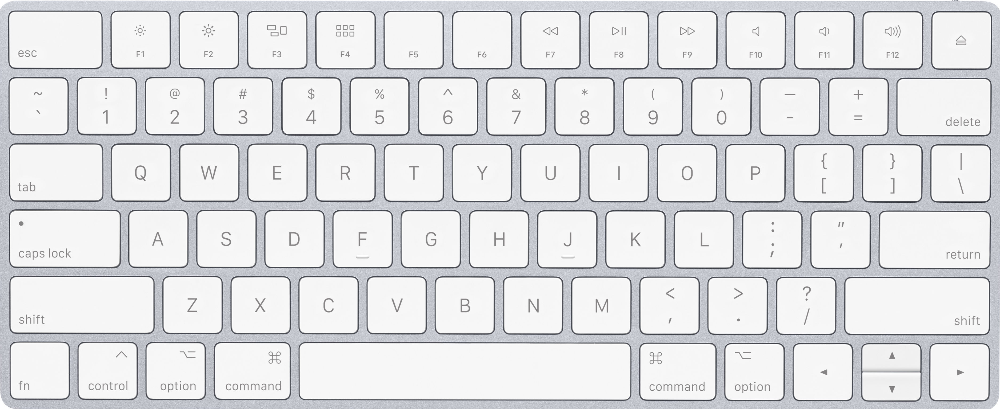
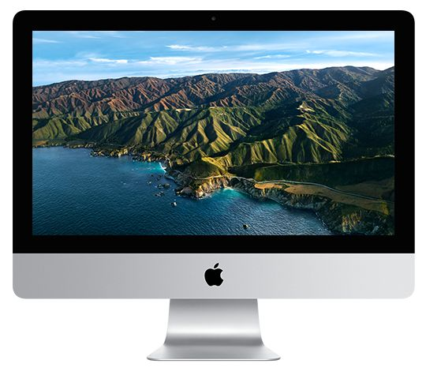
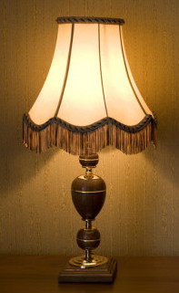
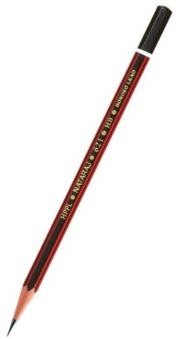
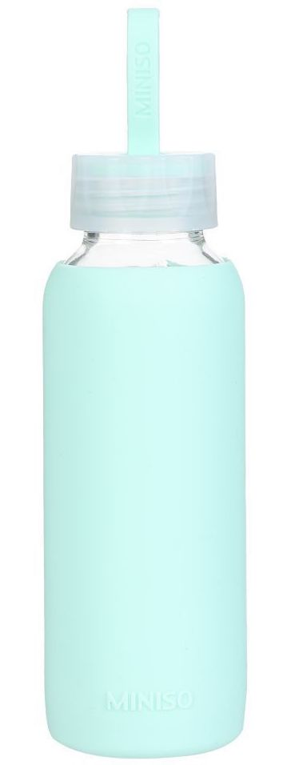
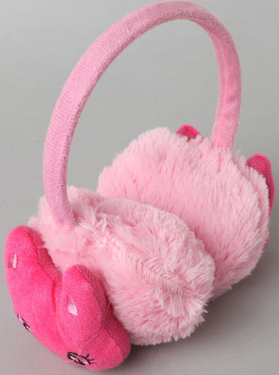

Case Study - 2
 VS.

VS.

Google Lens VS. MobileNet
1. Tested Image - Harry Potter

Output On GOOGLE LENS -
Harry Potter
Output On MOBILENET -
Comic Book
Result :
MobileNet is more accurate.
2. Tested Image - Teddy Bear

Output On GOOGLE LENS -
Stuffed Bear
Output On MOBILENET -
Teddy, Teddy Bear
Result :
Draw
3. Tested Image - Keyboard

Output On GOOGLE LENS -
Apple Keyboard
Output On MOBILENET -
Keypad, Keyboard
Result :
Google Lens is more accurate.
4. Tested Image - Imac Desktop

Output On GOOGLE LENS -
Apple Desktop
Output On MOBILENET -
Desktop Computer
Result :
Google Lens is more accurate, as it gave the company name as well.
5. Tested Image - Geometry Box

Output On GOOGLE LENS -
Maped Geometry Box
Output On MOBILENET -
Screwdriver
Result :
Google Lens is more accurate.
6. Tested Image - Lamp Shade

Output On GOOGLE LENS -
Lamp Shade
Output On MOBILENET -
Table Lamp
Result :
Draw
7. Tested Image - Pencil

Output On GOOGLE LENS -
Pencil
Output On MOBILENET -
Spotlight, Spot
Result :
Google Lens is more accurate.
8. Tested Image - Fidget Spinner

Output On GOOGLE LENS -
Hand Spinner
Output On MOBILENET -
Joystick
Result :
Google Lens is more accurate.
9. Tested Image - Water Bottle

Output On GOOGLE LENS -
Water Bottle
Output On MOBILENET -
Cocktail Shaker
Result :
Google Lens is more accurate.
10. Tested Image - Earmuffs

Output On GOOGLE LENS -
Earmuffs
Output On MOBILENET -
Bubble
Result :
Google Lens is more accurate.
I have tested 10 images.
Google Lens has predicted all 8 correctly, whereas MobileNet has predicted 3 correctly. So according to my case study Google Lens is more accurate.